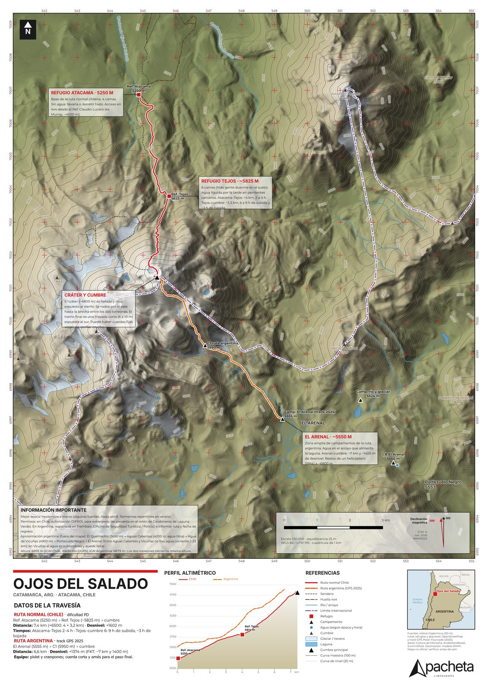
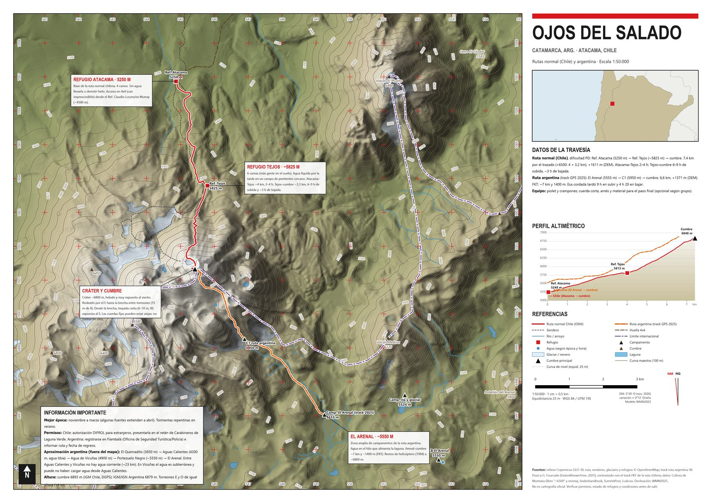

Análisis territorial y espacial
Cambio de uso del suelo, teledetección, modelos de elevación, accesibilidad e indicadores territoriales con series temporales.
Consultoría territorial · Mendoza, Argentina
Somos un equipo de geógrafos, sociólogos y programadores. Hacemos análisis espaciales, socioeconómicos y socioambientales, cartografía profesional y herramientas web para organismos públicos, organizaciones, empresas y productores.
Visor territorial · herramienta gratuita
Una muestra de lo que hacemos: cada trabajo se carga como una capa del visor. Seleccioná un proyecto para ver su ubicación y su ficha. Es de uso libre y se sostiene con colaboraciones.
Nuevo: «Mi ubicación», brújula y zonas guardadas para usar sin señal. Pronto: la app de Apacheta, con todo esto en el celular.
¿Te sirvió? Invitanos un cafecito ↗ (desde Argentina o desde cualquier otro país) · ¿Querés un visor así para tu organización o tu proyecto? Lo armamos a medida.
Servicios
Integramos la dimensión espacial con la económica, la social y la ambiental. Trabajamos por proyecto o como asistencia técnica permanente.
Cambio de uso del suelo, teledetección, modelos de elevación, accesibilidad e indicadores territoriales con series temporales.
Estudios de circuitos productivos, mercado de suelo, actividad económica y condiciones de vida a partir de censos, encuestas y trabajo de campo.
Diagnósticos de conflictos y riesgos, uso del agua, expansión urbana sobre áreas agrícolas y de piedemonte, y líneas de base ambientales.
Mapas temáticos para informes y publicaciones, y cartografía topográfica de montaña lista para imprimir.
Visores web, bases de datos espaciales y automatización de procesos con PyQGIS, GDAL y PostGIS.
Cursos de SIG y QGIS a medida para equipos técnicos de organismos y organizaciones.
Herramienta gratuita · se sostiene con colaboraciones
Elegí cualquier lugar, decidí qué querés ver y descargalo en PDF con el diseño de Apacheta: norte, escala gráfica, referencias y créditos ya resueltos.
La versión Pro suma escala exacta, grilla UTM, curvas de nivel, tu track GPX, hojas hasta A1 y PDF georreferenciado: pack de 5 mapas a $10.000.
Detrás de esta herramienta hay un equipo de geógrafos, sociólogos y programadores. La app está para usarse; si tu proyecto, tu obra o tu informe necesitan algo pensado para ese territorio, lo armamos a medida.
Nuevo · para ciencias sociales
El Censo 2022 de toda la Argentina en un mapa, hasta el nivel de radio censal: necesidades básicas, acceso a internet, densidad y más. Y un mapa de aportes: compartís un link y la gente marca en el mapa lo que pasa en su barrio, para cruzarlo con el censo.
La versión Pro suma 23 indicadores, cruces de variables con mapa bivariado y correlaciones, tu área de estudio, carga de tus propios datos (CSV o GeoJSON), mapas de aportes con link para compartir e informe en PDF. Funciona con el mismo código Pro, pagado desde cualquier país.
La armamos sociólogos, geógrafos y programadores. Si tu investigación o tu proyecto necesitan otro recorte, otras fuentes o un relevamiento propio, lo hacemos a medida.
Proyectos a medida
El visor y «Armá tu mapa» están para usarse: los hicimos para que cualquiera explore y salga a la montaña. Pero un proyecto pensado para tu territorio, tus preguntas y tus datos siempre va a dar un resultado mejor. Ahí entra el equipo que está detrás: geógrafos, sociólogos y programadores trabajando sobre tu caso.
Para explorar, planificar una salida o tener un mapa rápido.
Para organismos, empresas, organizaciones, productores y profesionales.
Contanos qué necesitás y te respondemos con una propuesta técnica.
Solicitar una propuestaMapas impresos
Los mapas del visor también se pueden pedir impresos, para la mochila o para la pared. Tocá cada mapa para verlo más grande.

Cartografía de montaña
Mapa topográfico para andinistas: ruta normal por Chile y ruta argentina, refugios Atacama y Tejos, campamentos, agua, perfil altimétrico, datos de la travesía e información importante para el ascenso.

Cartografía de montaña
Versión apaisada con panel lateral: las dos rutas sobre el relieve, perfil altimétrico comparado, referencias, mapa de ubicación y datos de cada travesía.
Metodología
Definimos la pregunta, el área de estudio y la información disponible.
Alcance, metodología, productos, cronograma y presupuesto por escrito.
Avances revisados en conjunto, con datos y procesos documentados.
Informe, cartografía y capas en formatos abiertos, con una instancia de presentación.
Quiénes somos
Somos una consultora joven de geógrafos, sociólogos y programadores. Combinamos el análisis espacial con la mirada social y el desarrollo de herramientas para abordar cada territorio de manera integral.
Análisis espacial, cartografía, teledetección y relevamiento en campo. Escalas, coordenadas y precisión acordes a cada uso.
Entrevistas, encuestas, datos censales y mapeo participativo. Las personas y los actores detrás de cada territorio.
Visores web, bases de datos geográficas y herramientas como las de este sitio, hechas a la medida de cada organización.
Las herramientas gratuitas de este sitio las desarrollamos nosotros. Imaginate lo que podemos hacer pensando en tu proyecto. Contanos qué necesitás.
Contacto
Contanos el alcance de tu proyecto y te respondemos con una propuesta técnica.